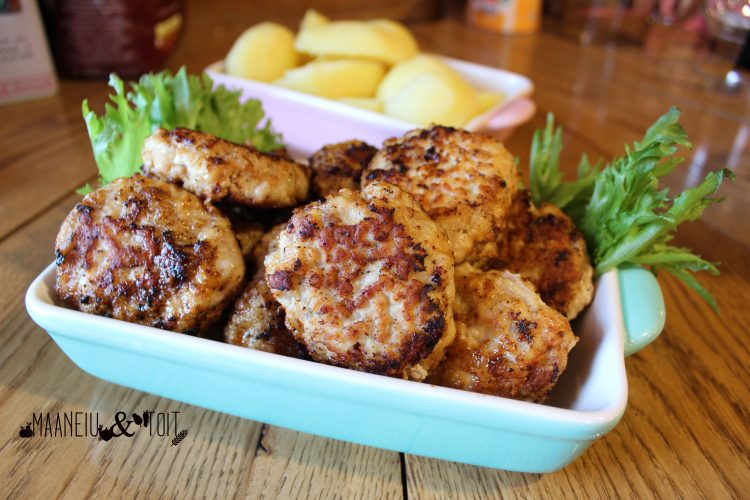

1 muna
1 sibul, peeneks hakitud
2 spl riivsaia
Soola ja pipart maitse järgi
Mõned kartulid
Sega hakkliha, muna, hakitud sibul, riivsai, sool ja pipar suures kausis.
Vormi hakklihasegust kotletid.
Kuumuta pannil õli ja prae kotlette mõlemalt poolt kuldpruuniks.
Serveeri kotletid keedetukartulitega. Soovi korral lisa kartulitele võid ja maitserohrlist.
Hind: 4 eurot | Portsjonid: 2 | Hind portsjoni kohta: 2eur | Valmistusaeg: 35min
Koostisosad:
400g hakkliha1 muna
1 sibul, peeneks hakitud
2 spl riivsaia
Soola ja pipart maitse järgi
Mõned kartulid
Valmistamise juhised:
Koori ja keeda kartulid soolaga maitsestatud vees kuni need on pehmed.Sega hakkliha, muna, hakitud sibul, riivsai, sool ja pipar suures kausis.
Vormi hakklihasegust kotletid.
Kuumuta pannil õli ja prae kotlette mõlemalt poolt kuldpruuniks.
Serveeri kotletid keedetukartulitega. Soovi korral lisa kartulitele võid ja maitserohrlist.